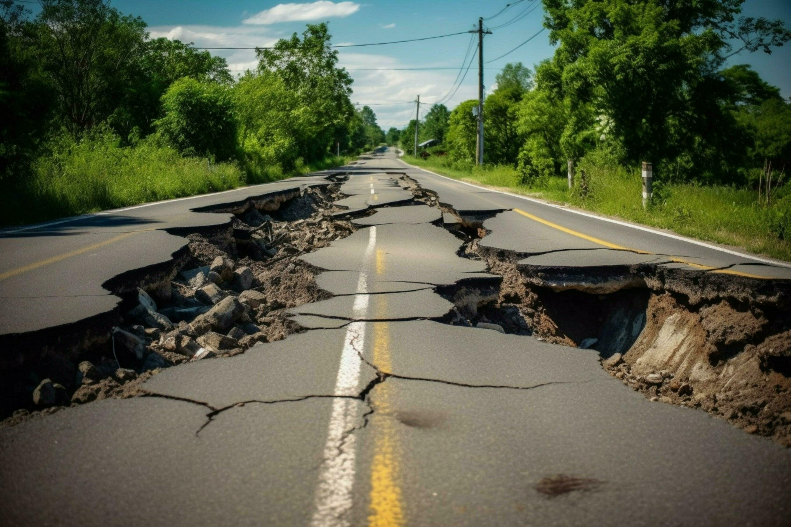
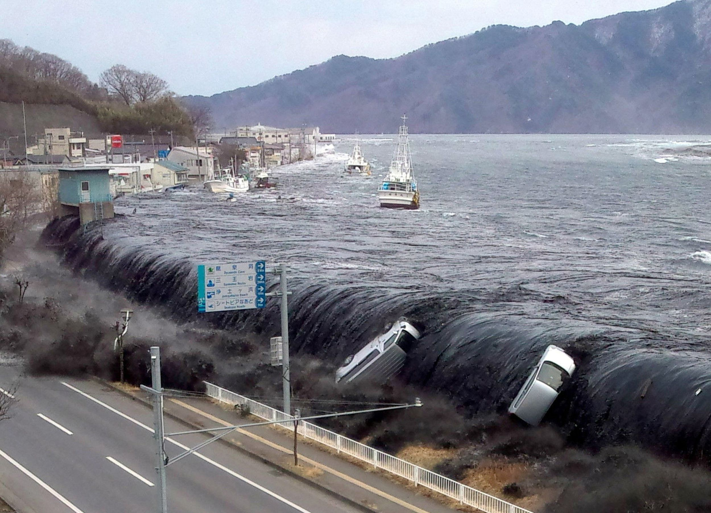
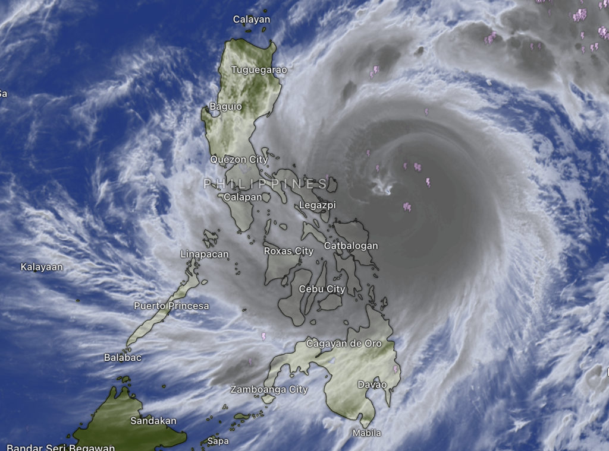
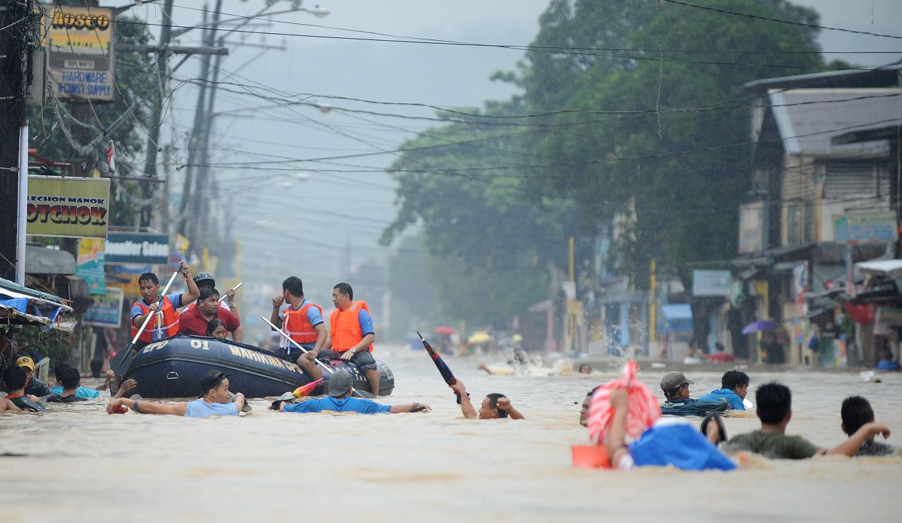
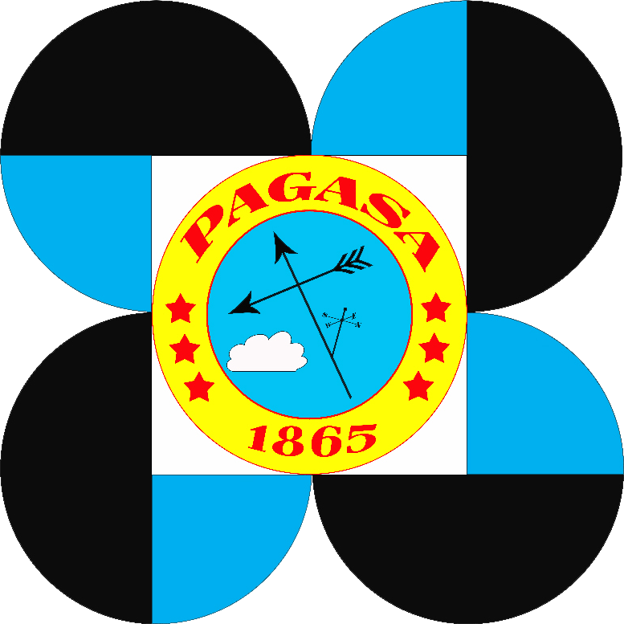
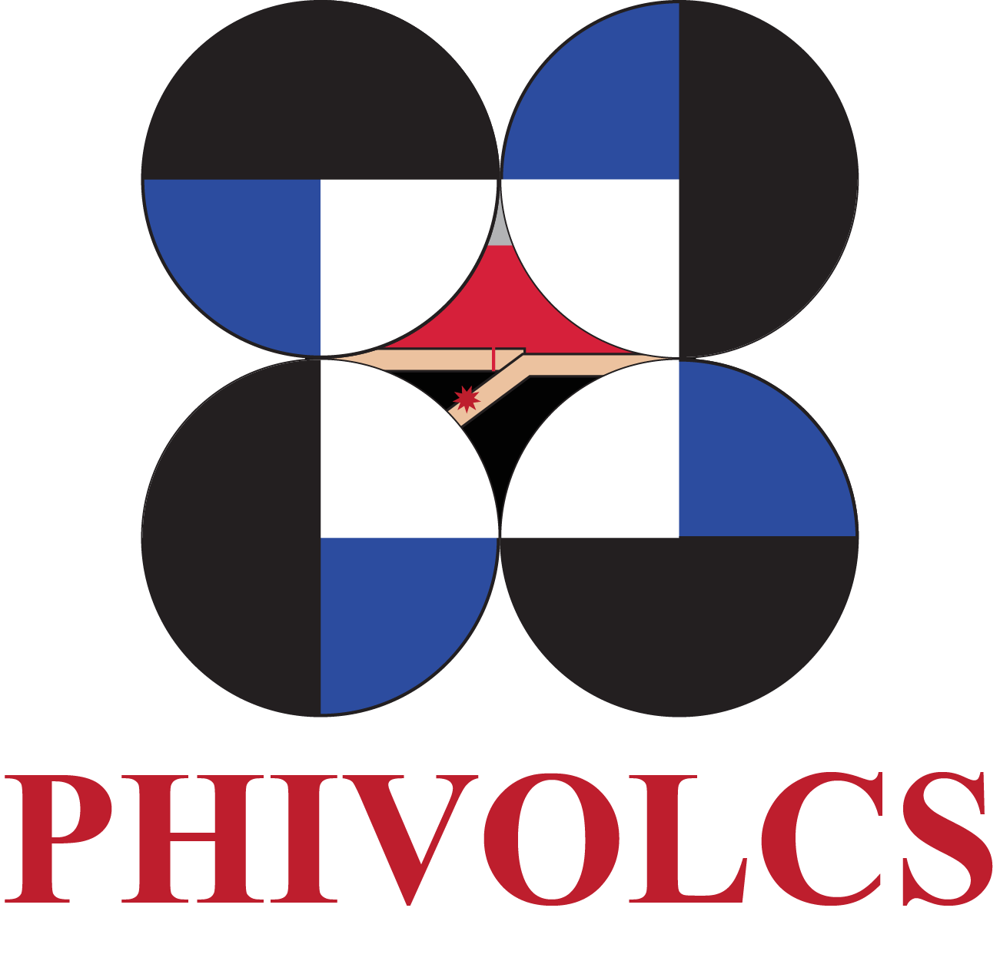
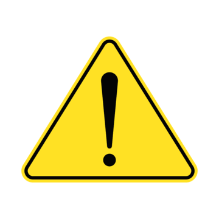

Help to reduce the impact of disasters in the Philippines
Hazard Awareness
Is the way to identify the hazards and to help people recognize these dangers, to understand their potential consequences.
Geologic hazards


Geologic hazards
Hydrometeorological hazards


Hydrometeorological hazards
PAGASA and PHIVOLCS


PAGASA and PHIVOLCS
Safety Hazard

Safety Hazard
Geologic hazards
A geological hazard is a natural disaster caused by processes happening inside or on the surface of the Earth. These events can damage property, harm people, and change the environment. Pacific island countries and territories are all highly vulnerable to geological hazards because they are located within the Pacific Ring of Fire, home to about two-thirds of all the active or dormant volcanoes on Earth.
Earthquake
An earthquake happens when the ground suddenly shakes due to movement of tectonic plates beneath the Earth surface. Caused by the release of energy along faults. Can destroy buildings, roads, and bridges. May trigger landslides or tsunamis.
Volcano Eruption
A volcanic eruption occurs when magma (hot melted rock), ash, and gases escape from a volcano. Can produce lava flows, ashfall, and toxic gases. May destroy nearby communities. Can affect climate temporarily.
Tsunami
A tsunami is a series of huge ocean waves usually caused by underwater earthquakes, volcanic eruptions, or landslides. Travels very fast across oceans. Causes severe flooding in coastal areas. Can destroy homes and buildings near the shore.
Hydrometeorological hazards
“Process or phenomenon of atmospheric, hydrological or oceanographic nature that may cause loss of life, injury or other health impacts, property damage, loss of livelihoods and services, social and economic disruption, or environmental damage”.
Typhoon
A typhoon is a strong tropical cyclone in the Western Pacific, with rotating winds around a low-pressure center called the eye. They are classified by wind speed, from tropical depression to super typhoon, with stronger winds causing more damage.
Flood
Floods happen when normally dry land is covered by water. Flash floods occur suddenly and violently, river floods happen when rivers overflow from continuous rain, and coastal floods are caused by storm surges or unusually high tides.
PAGASA and PHIVOLCS
Philippine Atmospheric, Geophysical and Astronomical Services Administration.
PAGASA is the government agency responsible for monitoring weather, climate, and atmospheric conditions in the Philippines. It plays an important role because it provides early warnings about typhoons, heavy rainfall, floods, heat waves, and droughts. These warnings help the government and the public prepare and stay safe during natural hazards. PAGASA also supports important sectors such as agriculture, aviation, and disaster risk reduction by giving accurate weather forecasts and climate information.
Philippine Institute of Volcanology and Seismology
PHIVOLCS is responsible for monitoring earthquakes, volcanoes, and other geological hazards. Its importance lies in protecting lives and property by issuing alerts and warnings related to earthquakes, volcanic eruptions, tsunamis, and fault movements. Through scientific monitoring and public education, PHIVOLCS helps communities understand risks and prepares them for possible disasters.